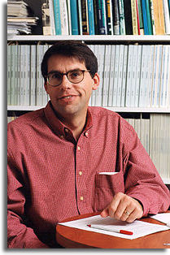

Professor
of Biological Sciences
176 Galvin Life Science
Notre Dame, IN 46556
Phone: (574) 631-6094
Email: Lodge.1@nd.edu
David Lodge (D. Phil., University of Oxford) is an ecologist
whose research examines the ways that human activities change
freshwater ecosystems. He is also interested in the intersection
of science, religion, ethics, and policy. Lodge is currently
conducting research in Lake Michigan and in inland lakes and
streams of Indiana, Michigan, North Carolina, Denmark, and
Kenya. He has published over 60 papers in scientific journals
and books. He has been a fellow of the Kroc Institute since
1999.
Top
of Page
Home
> Faculty > David M. Lodge